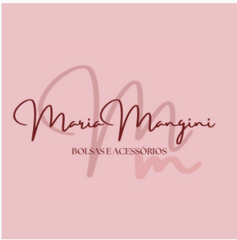
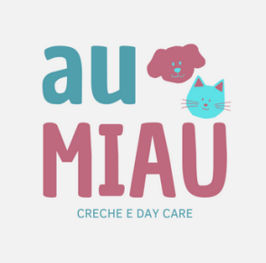
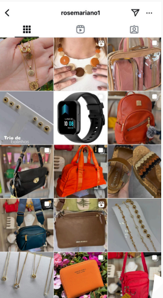

criação de posts
conteúdos criativos para publicar nas suas redes sociais
Me chamo Camila Mariano! Sou apaixonada por marketing e mídias sociais, e louca por animais! Vou dar um toque criativo para fazer sua empresa brilhar na internet, com postagens incríveis! Ofereço serviços de gestão de redes sociais, criação de conteúdo, edição de fotos e vídeos, além da confecção de logotipos e outros materiais visuais, sempre focando em resultados reais e engajamento Vamos juntos construir a sua história de sucesso!
conteúdos criativos para publicar nas suas redes sociais
planejamento, criação e publicação de conteúdos audiovisuais
confecção de logotipos, folhetos e outros materiais
edições envolventes para aumento do engajamento
Neste projeto, foi solicitada a criação de um logotipo para uma confeitaria artesanal. A paleta de cores em tons de rosa e rosé expressa a doçura da confeitaria e transmite uma sensação de delicadeza e prazer, refletindo a essência dos produtos oferecidos.
Aqui, foi solicitada a criação de um logotipo para uma loja de bolsas e acessórios de Tabatinga/SP. O design apresenta um elegante tom rosé, com as letras 'Mm' em cursivo ao fundo, refletindo a sofisticação e a autenticidade dos produtos.
Neste projeto, foi solicitada a criação de um logotipo para a Galeria Dante Alighieri (mini shopping de Itirapina/SP). O design o tom gelo, com um contorno estilizado de Dante Alighieri, evocando a elegância e a cultura que caracterizam o espaço.
O design do logotipo transmite uma atmosfera divertida e acolhedora, utilizando cores que nos chamam para o universo pet. O desenhos de gato e cachorro reflete o carinho e o cuidado dedicados aos animais.
Neste projeto, foi criado um folder virtual para a empresa especializada em vidros temperados e esquadrias de alumínio, que estava contratando um novo colaborador. As cores azul e branca foram escolhidas para remeter à transparência dos vidros.
Foi realizada uma publicação destacando a nova base de maquiagem da loja, utilizando a paleta tons rosé presente no logotipo. A comunicação reflete a delicadeza da marca e convida os clientes a experimentarem a base, prometendo um look radiante e duradouro.
Neste caso, a página da empresa foi reorganizada. Uma bio clean foi aderida, somente com o essencial, para que os clientes se localizem facilmente e queiram visitar a loja.
Fotos e vídeos foram capturados e editados, conferindo um ar de organização e profissionalismo à imagem da empresa. Esse refinamento visual cativa os clientes, tornando a apresentação ainda mais atraente.
O mesmo foi realizado na página desta loja infantil. Adotamos uma bio que continha informações essenciais para facilitar a navegação dos clientes, e implementamos destaques em amarelo com desenhos lúdicos. As cores vívidas foram escolhidas para despertar a curiosidade das crianças e criar uma atmosfera divertida.